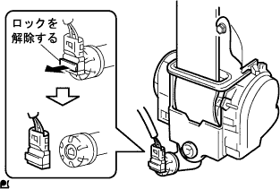
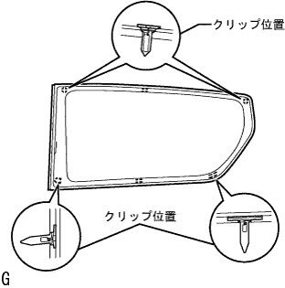
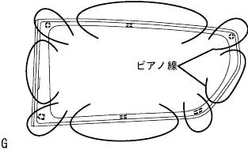

Quota Window ASSY RH removal |
| 1. Remove the rear seat back ASSY |
Make the rear seat Batsuku in an advance.
 |
Remove the clip of the two bolts mounting part.
 |
Turn over the rear seat Batsuku cover, remove the two bolts, and remove the rear seat Batsuku ASSY.
| 2. Remove the rear seat cushion asy |
Press the lock of the front lock in the direction of the arrow in the figure to remove it.
Pass the rear seat belt through the rear seat cushion cover and pad back rubber band.
 |
Remove the hook at the rear hook at the rear seat cushion assembly, and remove the rear seat cushion assessy.
| 3. Remove the rear seat back hinge SUB-ASSY RH |
 |
Remove the bolt and remove the rear seat Batsuku hinge RH.
| 4. Remove the rear seat back ASSY RH |
| 5. Remove the rear seat back ASSY LH |
Make the rear seat Batsuku in an advance.
 |
Remove the clip of the two bolts mounting part.
|
Turn the lower part of the rear seat Batsuku cover, remove the two bolts, and remove the rear seat.
| 6. Remove the rear seat cushion assy |
Lock the front side of the rear seat cushion Assy is locked by the rear seat cushion lock striker.
 |
Remove the snap ring from the rear seat back hinge RH.
Rena seat cushion Assy The right bracket is pulled out and remove the rear seat hinge RH.
 |
Remove the bolt and remove the rear -to -hing LH.
Rena seat cushion Assy rear seat hook Assy RH is drawn and the rear seat cushion Assy is removed.
Pass the rear seat belt through the rear seat cushion cover and pad back rubber band.
Remove the rear seat cushion assessy.
| 7. The front door scuff plate RH is removed |
 |
Pull it up by hand, remove the claws, and remove the front door skirt plate RH.
| 8. Cowl side trim board RH removed |
 |
Remove the claws and remove the cowl side trim board.
| 9. Front door opening trim Weather strip RH is removed |
| 10. Remove the backdoor with the strip |
| 11. Remove the rear floor carpet |
| 12. Spare Wheel Cover ASSY removes |
| 13. Remove the backdoor scuff plate |
 |
Remove two clips.
Pull up by hand from the end of the trim cover, remove the clip, and remove the Batsukudo Askatsuh plate.
| 14. Rapping belt Outanka cover removed |
 |
Remove the claws and remove the wrap belt Otaanca cover.
| 15. Front sheet ota -altered Assy RH removed (floor anka part) |
Remove the bolt and remove the front seat Outabelt Assy RH (floor anka).
| 16. Rear seat 3 point type belt ASSY OUT RH removed (floor anka part) |
Remove the bolt and remove the rear seat 3 point type belt ASSY OUT RH.
| 17. Side No.1 Trim ASSY RH removed |
 |
Pull it in the inside of the vehicle by hand, remove the clip and claws, and remove the side N O.1 Trim ASSY RH.
| 18. Deck trim side panel Assemble RH |
 |
Remove the clip and claws, and remove the Detsu Rim Side Panel Assing RH.
| 19. Rum removed from the roof side garnish Inn RH |
 |
Pull the garnishille toward the inside of the vehicle, remove the clip, and remove the roof side -inanaganish RH.
| 20. Seat belt anchor cover cap removed |
 |
Use a thin -bladed flathead screwdriver with a protective tape to remove the claw, remove the bolt, and remove the seat belt anchor cover.
| 21. Front seat ota -alive Assemble RH removed |
Remove the bolt and remove the front seat Otabelt Assy RH.
|  |
Use a thin -bladed flashed screwdriver with a protective tape to remove the claws, pull the locking button in front and unlock the lock.
Separate the connector (for plitency).
Remove the two bolts and remove the front seat outa belt ASSY RH.
| 22. Centapeller garnish RH is removed |
 |
Pull the garnitsu shu in the inside of the vehicle, remove the clip, and remove the center pillar garnish RH.
| 23. Quota window ASSY RH removed |
|  |
Cut the connector.
Attach the suction rubber to the glass.
Put a protective tape on the body surface and indoor side of the glass outer periphery.
Apply soap water sufficiently to the adhesive part.
 |
Insert a wind shield knife into the adhesive part.
While holding the edge and the edge of the glass at a right angle, draw the blade of the wind shield knife to the glass surface and the end, pull it parallel to the glass end and separate it.
|  |
As shown in the figure, the piano wire (0.6 mm is appropriate) and attach both ends to the Mighty Player.
Pull the piano wire alternately to leave the pins and cut the adhesion.
Some pins are removed from the indoor side with pliers.
Hold the suction rubber, remove the pin, and remove the quota windglas RH.